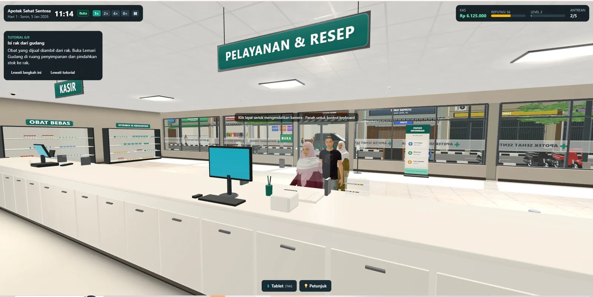

01 / 04
Game 3D web · Simulasi apotek
Pharmacy 3D Simulator
Apotek yang bisa dijelajahi dan dikelola langsung di browser: melayani pasien, memproses resep, menjaga stok, dan mengembangkan usaha.

Masalah
Pengelolaan apotek biasanya berhenti di teori. Game ini membuat prosesnya bisa dimainkan: resep harus diperiksa, stok harus tertib, dan kesalahan ada akibatnya.
Yang dibangun
- Dunia 3D orang pertama/ketiga dengan antrean 7 kategori pasien.
- Wizard resep 5 langkah dengan deteksi masalah resep, plus lab racik (timbang dan campur).
- Ekonomi: kasir, laporan keuangan, pegawai otomatis, 19 misi, 18 pencapaian.
Keputusan teknis
- Stok dikelola per batch dengan FEFO plus kedaluwarsa dan stock opname, sesuai praktik apotek.
- Progres tersimpan di 3 slot + autosave (IndexedDB), tanpa backend.
- 25 ribu+ baris TypeScript, diuji otomatis.
Stack
ReactTypeScriptThree.jsReact Three FiberZustand
Paling nyaman di laptop/PC dengan Chrome. Semua data obat dan pasien fiktif.